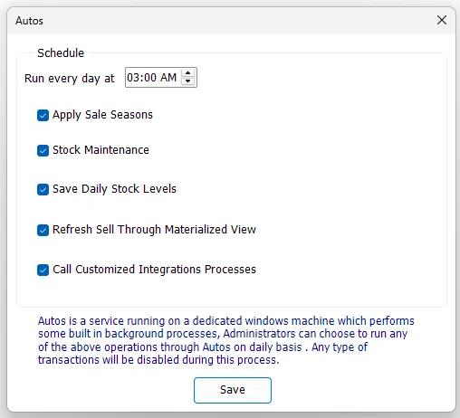

IMS Autos
IMS Autos is the administration screen for the IMS background automation service. It defines the daily maintenance time and selects which scheduled maintenance jobs the server service should run automatically.

Configuration screen and server service
The IMS client screen does not perform the scheduled jobs itself. It saves the automation schedule and enabled options in the IMS database. The IMS Autos Windows service running on the server reads those settings and executes the background work.
This separation allows an administrator to configure automation from the normal IMS client while the server continues to execute the jobs even when that user's workstation is closed.
Run every day at
Select the daily maintenance time, then enable the required jobs. The server worker checks the IMS automation configuration regularly and starts the daily shift when the configured hour and minute are reached.
Scheduled daily jobs
| Option | What the server does |
|---|---|
| Apply Sale Seasons | Processes Sale Season start/end rules. Newly starting seasons apply their configured sale prices; ended seasons either return eligible items to original price or leave them in the applicable post-sale/outlet state according to the Sale Season policy. |
| Stock Maintenance | Performs the full all-store stock reconstruction used by Stock Maintenance: opening quantity plus purchases/returns, transfer in/out, sales/returns, adjustments and depreciation. |
| Save Daily Stock Levels | Maintains the daily stock-movement history used by historical stock/reporting logic. The current service recalculates recent dates and catches up from the latest logged movement date when necessary. |
| Refresh Sell Through Materialized View | Refreshes the Sell Through materialized view so Sell Through reporting uses the latest prepared inventory/sales aggregates. |
| Call Customized Integrations Processes | Controls the existing V-Count integration schedule in the current server service, including configured sales/traffic exchange. Integration Center MORNING_SHIFT endpoints are handled separately after the daily maintenance shift. |
MORNING_SHIFT. This execution is separate from the Call Customized Integrations Processes checkbox used by the V-Count schedule.Daily stock movement maintenance
The option shown as Save Daily Stock Levels maintains IMS daily stock-movement data rather than simply saving one static quantity snapshot. For each recalculated date, the service rebuilds daily movement from:
| Source | Movement treatment |
|---|---|
| Purchases / Purchase Returns | Purchases add stock; Purchase Returns subtract it. |
| Stock Transfers | Transfer In adds stock to the destination; Transfer Out subtracts from the source. |
| Cash / Credit Sales and Returns | Sales subtract inventory quantity; returns add it back. |
| Stock Adjustments | Uses the signed adjustment quantity. |
| Stock Depreciation | Subtracts depreciated/write-off quantity. |
Normally the service recalculates the most recent five days through today. If the movement log shows that an older date was missed, the service expands the range to catch up from the first missing day.
Loyalty housekeeping during the daily shift
The server worker also performs required Loyalty/Star Rewards housekeeping as part of the daily automation shift when the corresponding loyalty settings are in use. This includes processing eligible pending reward activity after the configured return period and maintaining applicable loyalty state.
This housekeeping is part of the server-side automation workflow rather than a separate checkbox on the IMS Autos screen.
Other background work handled by IMS Autos
The Autos service is more than the five daily checkboxes. The current server worker also performs background jobs that have their own schedules or triggers:
| Background function | Purpose |
|---|---|
| Reporting Scheduler tasks | Checks active scheduled Custom Report tasks, generates the required period, writes TXT/CSV/XLSX output and sends it through the configured Email and/or FTP destination. |
| Online-order supplier notifications | Every recurring Autos check looks for online orders created after the last processed order time for each configured Profile/Store, groups their inventory items by Supplier/Brand, and sends the order request to the applicable Supplier Mailing List recipients. |
| Integration Center MORNING_SHIFT | After the daily maintenance shift, runs active Integration Center endpoints configured for MORNING_SHIFT and records their result in the Integration Center Sync Log. |
| V-Count integration | When configured, exchanges hourly sales/category information and imports recent people-traffic data during the configured V-Count operating hours. |
| Star Rewards automation | Performs recurring Loyalty/Star Rewards maintenance such as applicable expiry and automated loyalty-offer processing. |
Online-order supplier notifications
This workflow is independent from the daily Autos schedule. The Autos service performs its general check approximately every 30 seconds, and CheckNewOrders runs whenever the IMS database connection is available.
- For each configured online Profile/Store, IMS Autos reads the last processed order date.
- It finds newer records already created in IMS Orders.
- It loads the inventory-item lines from Order Details and groups them by Supplier + Brand.
- Recipients are selected from the Supplier Mailing List: global recipients, supplier-wide/all-brand recipients, and exact supplier/brand recipients.
- Autos sends an HTML “new transfer request” email containing Order No., Barcode, Description, SKU/Style, Color, Size and Qty.
- After processing the batch, Autos advances the last processed order date for that Profile/Store.
Save the Autos schedule
- Select the daily Run every day at time.
- Enable the required daily jobs.
- Click Save.
- IMS stores the schedule and writes a “Modified IMS Autos settings” entry to the activity log.
If all daily-job checkboxes are cleared and the settings are saved, IMS removes the daily Autos schedule record rather than keeping an empty daily shift.
Service monitoring and logs
The server service writes informational, success-audit and error messages to the Windows Event Log for its major jobs and connection failures. Administrators can use these logs to confirm when the daily shift started, which jobs completed, and whether a background integration or maintenance task reported an error.